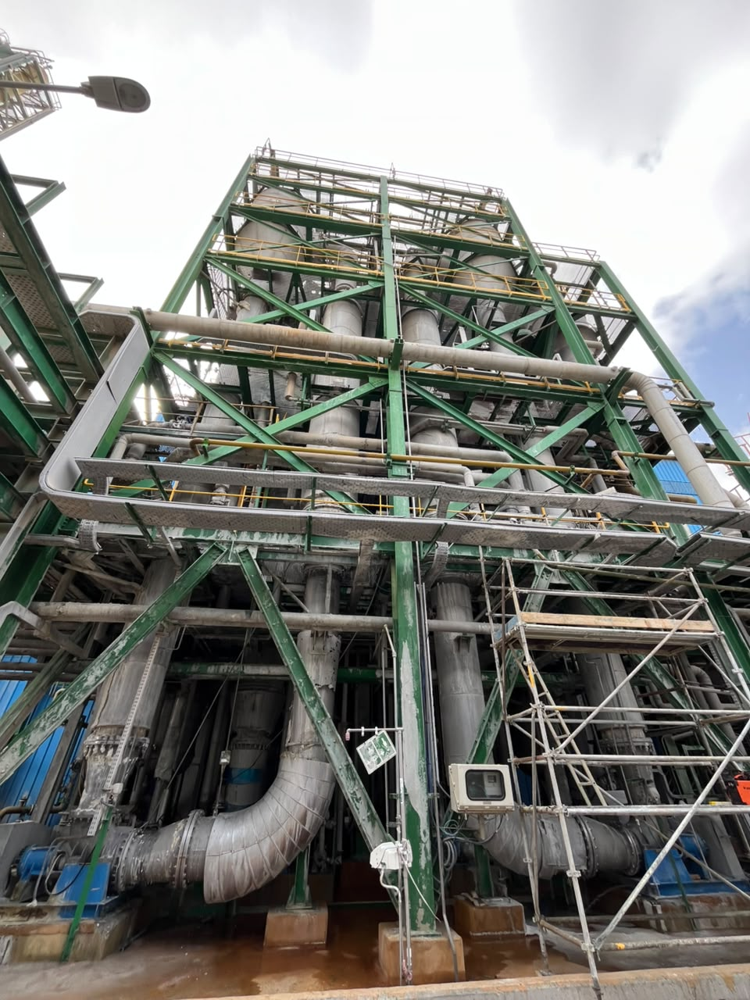
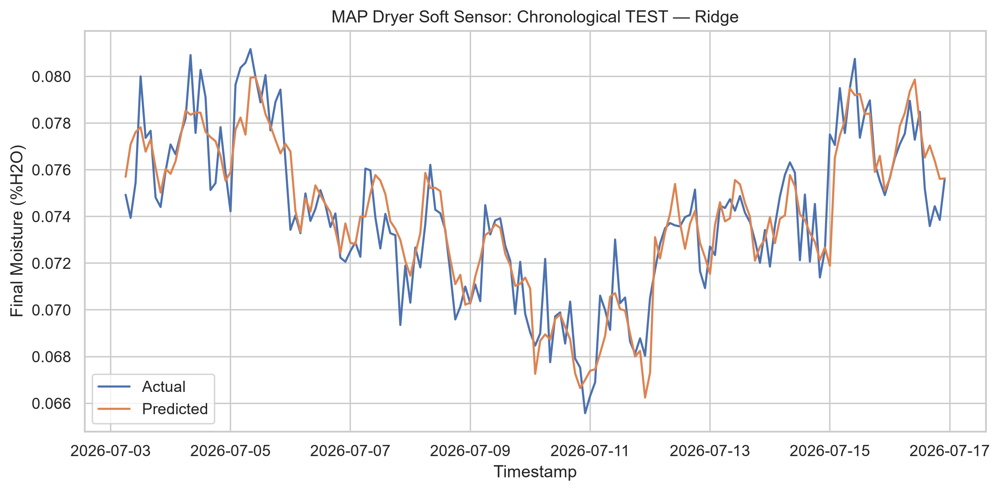

MAP / DRYER DIGITALIZATION01 — OPENING
OCP · JORF LASFAR
SOLUBLE
MAP
Making a continuous process continuously visible.PROCESS VISIBILITY04 — THE BLIND INTERVAL
THE PROCESS
NEVER STOPS.
LAB VISIBILITY DOES.
LAB
LAB
LAB
PROTOTYPE REPLAY Δt = 5 s · LAB ≈ 2 h
HELD-OUT EVIDENCE09 — VALIDATION
Evidence before ambition
The estimate follows held-out laboratory behavior.

R²0.8245
MAE0.001069
RMSE0.001403
TEST · 165 LAB SAMPLES · SYNTHETIC PROTOTYPE DATA · UNITS: PERCENTAGE POINTS % H₂O